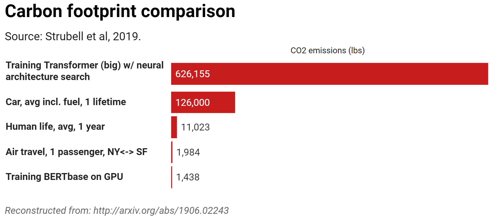
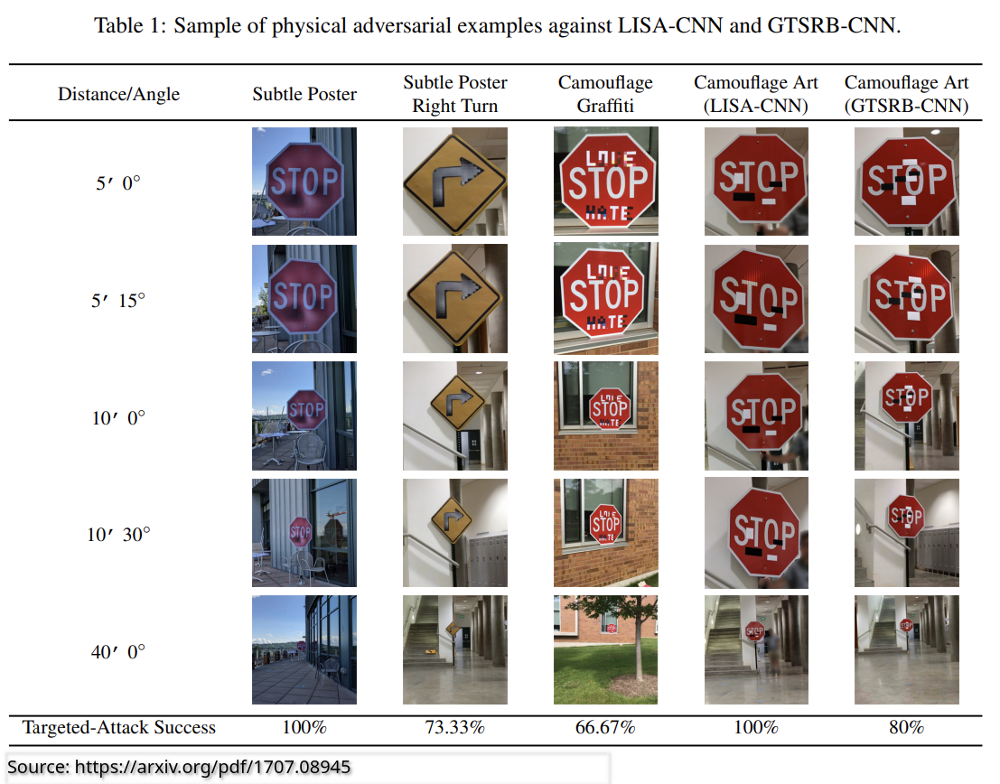
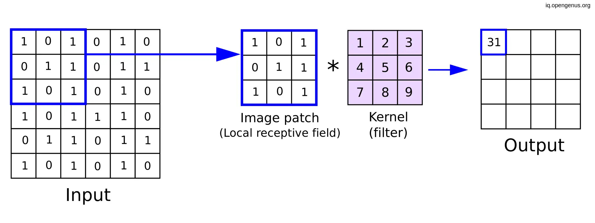
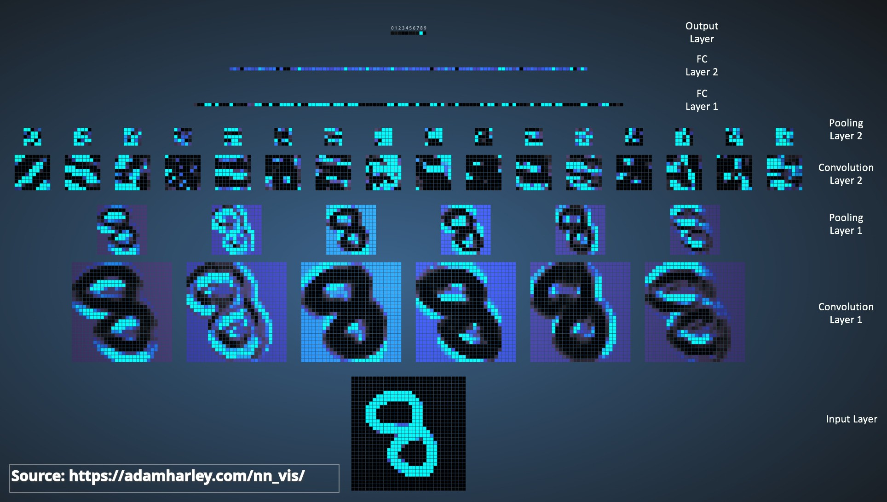
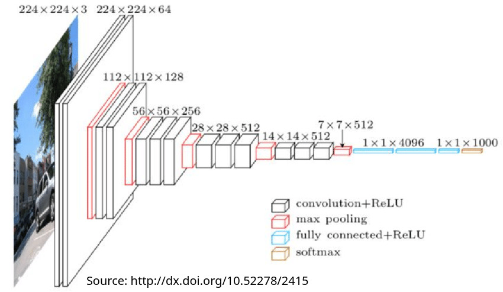
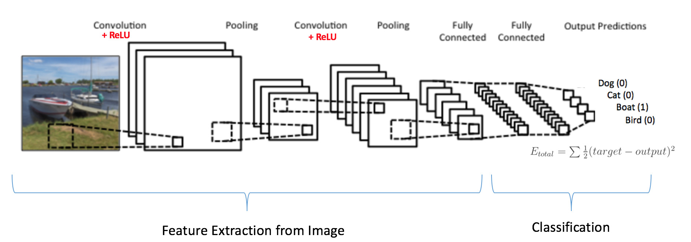
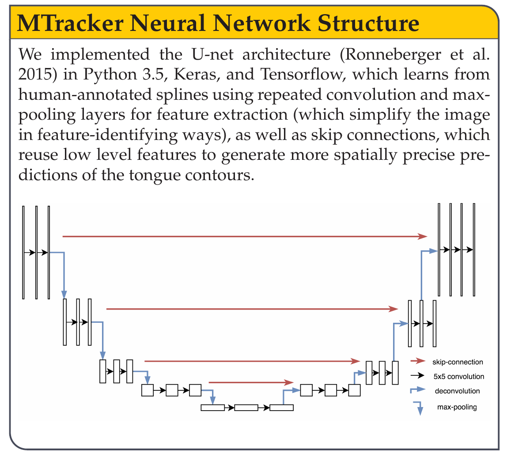

Artificial Neurons turn inputs into outputs according to function and bias, and output according to weights
Deep Neural Networks allow more complex decision making
Training involves doing inference, finding error, assigning that error to individual weights/biases, and updating parameters
Inference is just putting the input in, and observing the outputs
We know they’re unreasonably powerful
It’s not all good, though
… and they’re not just one model
What are the problems with using Deep Neural Networks?
What are the advantages of Deep Neural Networks?
Convolutional Neural Networks
Sequence Modeling and Transformers
Neural Networks are amazing, but they are not perfect
Let’s talk about why!
Neural models do not reveal their features, nor their decision making
We as a species do not understand how they’re actually doing the task
Being able to understand decisions in DNNs is an active area of research
If we don’t know how it’s making a decision, we can’t know whether it’s doing ‘the right thing’
There’s the possibility of unclear ‘why’
This is a key component of ‘AI Safety’ as discussed today
Models can be used for great good, or great evil
“Allow people with mobility to type” and ‘Allow all phone calls, period, to be transcribed’
Many beneficial tasks are very similar to very unethical tasks
It is not possible to control what humans do with this tool
We cannot readily control people’s ability to use or make these models (unlike e.g. plutonium)
Neural Networks don’t work well on normal consumer computers
Graphics Processing Units (GPUs) used for rendering graphics turn out to be great at other matrix multiplication, too
Desktop Workstations designed for this task cost upwards of $150,000
Nvidia has a near-monopoly at the moment, in hardware and software

These models train slowly, even on top of the line hardware
Energy costs are very high
Creating a model often requires creating several models to find best parameter sets
Many languages around the world currently lack the fiscal and energy resources to train ChatGPT-level LLMs
Hardware, energy use, and slow training makes these models easier to keep behind paywalls
Increasing pushes from the industry to use regulation to ensure only they can deploy these models
Open source/weight models are competitive, but still impossible for most people to run at home
People with knowledge of the model can subvert it in interesting ways
Stimuli which are perfectly acceptable to humans can be wildly misclassified

We don’t need to spend time thinking about features, just data and loss
This is the first kind of model which we’ve discovered which does this and works well
This alone is enough to make DNNs very, very competitive
The patterns you find don’t need to be remotely linear, unlike many classical approaches
You can model any continuous function with a neuron count that’s sufficiently high
You can use regularization to help reduce or prevent overfitting
Neural Networks can be trained on a more general task (e.g. recognizing speech) and then used on a more specific one (e.g. recognizing Afrikaans)
Fine-tuning can be helpful to improve performance with out-of-dataset tasks
Not every problem needs a Whole New Model
Often, more parameters is more better
Wav2vec2 has 317 million parameters
ChatGPT 3.5 is suspected to have ~20 billion parameters
Anthropic’s Claude 3 has a rumored 500 billion parameters
You can scale DNNs very readily, from small to large
You can design neural networks with many specialized architectures, that is, arrangements of neurons and units
DNN architectures can be task specific, and improve performance markedly
This leads to…
‘Feedforward Neural Networks’
We’ve also been focused on ‘fully connected’ or ‘dense’ networks
But there are many other approaches!
This can happen with encoder-decoder models
… or with…
Often used for generating images or any other kind of ‘imitation’
Also used for denoising audio (‘imitate the original audio without noise’)
Make one model which generates a thing, and another which tries to detect generated things

One model generates representations of the input data
Another model takes those representations and decodes them into a different form
More later!
Primarily used for processing grid-like data (e.g., images, spectrograms)
Excel in capturing spatial hierarchies in data.
Commonly applied in image and video recognition, image classification, medical image analysis
Each filter is a small matrix used to detect specific features (e.g., edges, textures)
Resulting feature map highlights areas of high similarity to the filter


Reduces the dimensionality of the prior layer, but retains the most important information
Max Pooling keeps the largest number and its position from the prior layer
Mean pooling keeps the average number from the prior layer




They concentrate data into meaningful patterns
They toss away less meaningful data
They feed it into a regular neural network for classification
You can find the important elements, no matter where they occur in the grid

Sequences of numbers (e.g. time series data)
Sequences of categories (e.g. different phonemes)
Sequences of words (e.g. sentences, books)
Tuned for data which are sequential
These include a short term memory, so that the output of each neuron is also influenced by the prior output
LSTM (Long Short Term Memory) networks are a variant allow for increased memory
These have been largely supplanted by…
Developed by Vaswani et al. (2017) in the paper “Attention is All You Need”
Excels in understanding context and relationships in text (and other sequential data)
Two Core Innovations
Allows the model to weigh the importance of words in a sentence (e.g), ignoring their position
Each input word is transformed into a Query (Q) and Key (K), which are turned into a by-word value
This is done several times in parallel (‘multi-headed attention’), with each calculation finding different elements
Output is a weighted sum of values, focusing the model’s attention on important words
Rather than using serial processing (like RNN/LSTM), positional encodings are added to tokens to ‘save’ word positions
This, with attention (which is handled by matrices), allow you to process the entire input at once, rather than running through sequentially!
Transformers process the entire input at once!
They handle very long context lengths, allowing long-distance dependencies (e.g. between ‘they’ and ‘transformers’)
They scale well, with more parameters able to be added for better performance
Attention allows focus on the most important relationships in the context
You can look at massive context lengths, so you can interpret massive texts and questions.
They’re very flexible, working in a lot of domains
They need a lot of computing and memory
They need massive amounts of data to train
They’re unreasonably good, so large numbers of tasks just become “uh, throw it into a transformer”

“Build a representation using one chunk of the network, then interpret it using another chunk”
These are really good for changing one kind of data into another
We could spend a quarter to understand every element
LIGN 167 goes much deeper into how they work
For now, you know enough to roughly understand the methods we use for…
Deep Neural Networks have lots of problems
Deep Neural Networks are also unreasonably effective
Convolutional Networks are great for grid-based data
Transformers are great for sequence data
All of this is relevant for speech!